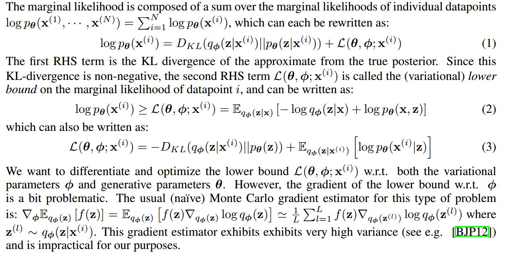
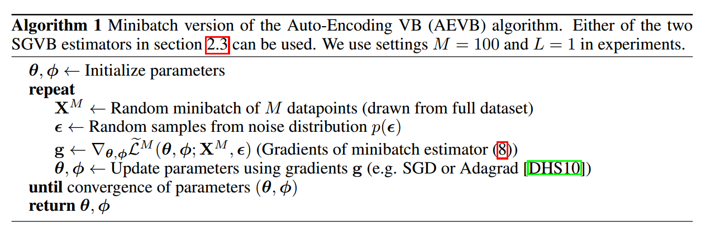
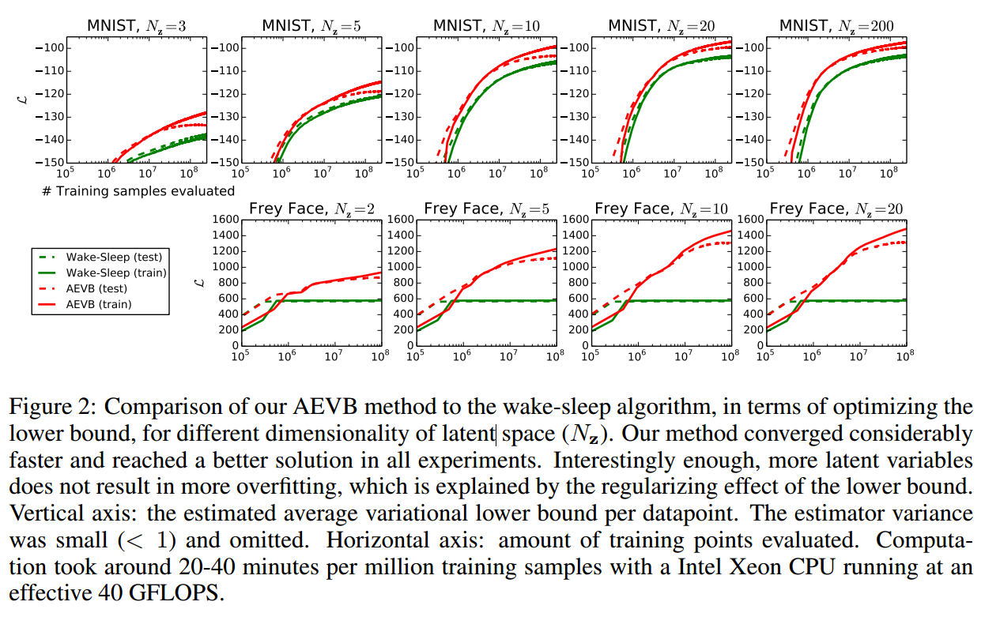
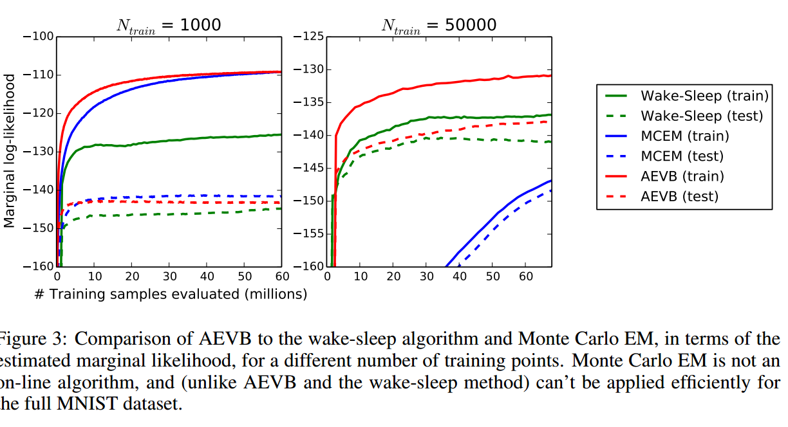
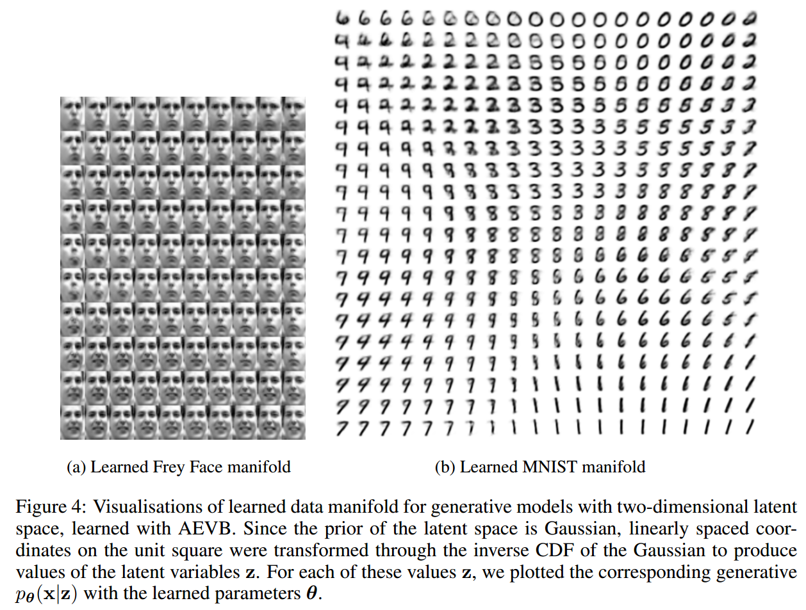
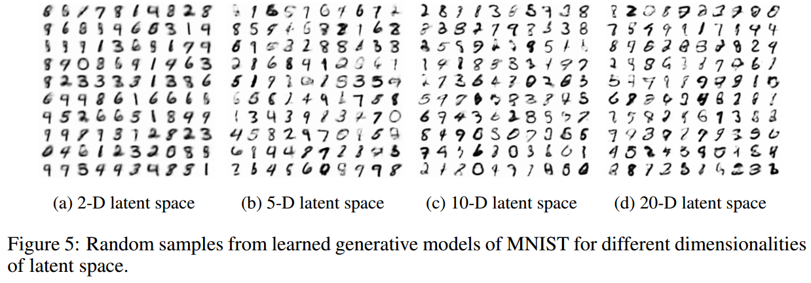

Luyiyun
2020-05-27 15:04:19
对continuous latent variable进行概率密度估计时，会存在一个难以处理的后验分布。variational bayesian（VB，其最常见的形式是mean-field方法）可以进行近似优化。但正常的mean-field方法需要后验分布期望的解析解。
本研究介绍了一种参数估计方法，其将variational lower bound给参数化，从而可以通过标准的梯度下降算法（SGVB）进行训练。
为了能够针对iid的样本集得到其continuous latent variables，本研究在SGVB的基础上进一步提出了一种AutoEncoding VB（AEVB）算法。其应用SGVB估计方法在一个recogntion model上，可以非常有效率地得到后验估计，而不用进行非常昂贵的iterative inference方法（如MCMC）。
学习的近似后验推理模型可用于许多任务，例如识别、去噪、表示和可视化目的。
当使用的recognition model是NN时，即variational auto-encoder。
这里对背景进行一下介绍
在bayes统计中，有先验和后验的概念：
\[ p(H=h|X) = \frac{p(X|H=h)p(H=h)}{\int{p(X|H=s)p(H=s)}ds} \tag{1} \]
其中\(p(H|X)\)为后验分布，\(p(H)\)为先验分布，\(p(X|H)\)为似然函数，如果是有多个iid样本的话，其一般表示为\(\prod_{i=1}^N{p(X=x_i|H)}\)。bayes统计的关键在于如何在已知先验、似然函数的基础上来得到后验。以上计算式中，最麻烦的在于分母中的积分项难以得到：
所以必须使用一些inference的方法来进行推断。
典型的隐变量模型有：GMM（高斯混合模型）、HMM（隐马尔可夫）等。
实际上，一个隐变量模型（机器学习意义上的）也可以看做是一个求后验的问题。
我们有显变量\(X\)，其分布依赖于一些隐变量\(H\)，由隐变量得到显变量的关系式为\(p(X|H)\)，如果这个关系式未知，则需要使用参数化的函数\(p_{\theta}(X|H)\)来表示。我们一般需要做两个任务：
显然，对于第一个问题，上面的bayes统计中的问题是一样的，隐变量即先验，显变量即后验，这个\(p(X|H)\)即似然函数。（我们可以根据我们的领域知识为隐变量给定一个合适的先验分布，或者使用一个平坦的、无信息的先验分布。）
至于第二个问题，如果我们能够知道后验的话，也是非常简单的：
\[\log{p_{\theta}(X)} = \log{p_{\theta}(X|H)}+\log{p(H)}-\log{p_{\theta}(H|X)} \tag{2}\]
（当然，实际上好像也没人这样搞。。。）
总之，在隐变量模型中，进行后验的推断也是非常重要的。
MCMC是进行后验推断的最重要的方法，特别是在bayes统计领域（MCMC拯救了bayes估计）。
为什么MCMC能够进行进行后验估计？我们需要先简单了解一下MCMC的过程（这里是最简单的Metropolis算法，Metropolis-Hastings算法和他类似）:
target distribution：\(p(X)\)
proposed distribution：\(q(X)\)，任意分布第一步：随机一个初始值\(X=x_0\)，只要让\(p(X=x_0)\ne0\)即可。
第二步：使用\(q(X)\)得到一个随机的点\(x'_i\)。
第三步：计算transition probability： \[p_{move}=\min(\frac{p(x'_i)}{p(x_i)}) \tag{3}\] 其中\(p(x_i)\)是当前所在的点。依据此概率来判断是否接受\(x'_i\)作为\(x_{i+1}\)，否则\(x_{i+1}=x_{i}\)。
现在我们的目标分布是\(p(H|X)\)，当把它代入上面的transition probability的计算的时候，我们发现，分母上的积分式被约掉了。这时候不需要进行烦人的积分运算了，我们只需要能够计算似然和先验即可。
这也就是为什么MCMC可以进行后验推断的原因。
现实应用的时候，Metropolis或Metropolis-Hastings算法效率非常低，需要使用Gibbs算法或Hamilton算法来替代，但本质上原理是一样的。
MCMC的优点：
MCMC的缺点：
这是后验推断的另一种思路，即使用一个可变化的（或者参数化的）分布（\(q_{\phi}(H)\)）去逼近后验分布。
由上面的公式\((2)\)，我们可以得到：
\[\log{p(X)} = \log{\frac{p(X|H)}{q_{\phi}(H)}}+\log{p(H)}-\log{\frac{p(H|X)}{q_{\phi}(H)}}\]
等式两边对\(q_{\phi}(H)\)做期望，得到：
\[\log{p(X)}=-D_{KL}(q_{\phi}(H)|p(X|H))+E_{q_{\phi}}[\log{p(H)}]+D_{KL}(q_{\phi}(H)|p(H|X)) \tag{4}\]
等式左边是关于\(\phi\)不变的，所以如果希望最小化\(q_{\phi}(H)\)和后验的“距离”–\(D_{KL}(q_{\phi}(H)|p(H|X))\)，只需要最大化下面的东西即可，这个就是ELBO(evidence lower bound)：
\[\phi^*=argmax_{\phi}{ELBO}=argmax_{\phi}\{-D_{KL}(q_{\phi}(H)|p(X|H))+E_{q_{\phi}}[\log{p(H)}]\} \tag{5}\]
以上结果也可以通过Jessen不等式得到
现在问题就变成了如何最小化ELBO，这时候，\(q_{\phi}(H)\)的选择就变得格外重要了，其必须要满足以下两个方面：
这时候，大家传统的选择是mean-field，即使用相互独立的多个分布组成的高维分布来做\(q_{\phi}(H)\)（最最常用的当然是每个成分用gaussian）。
但需要注意，mean-field需要似然函数必须是简单的，最好是指数分布簇中的。不然去显式的计算ELBO依然是困难的。
显式的计算出ELBO意味着mean-field没有使用Monte Carlo方法去估计期望。而VAE是用MC去估计的期望，从这一部分来说，mean-field是有优势的。而且mean-field可以改为Monte Carlo版本，从而能够对任意的似然函数进行估计，但灵活性上可能会不如VAE（毕竟是神经网络）。
现在将讨论的范围限制在下面的区域内：
数据集为\(X=\{x^{(i)}\}_{i=1}^N\)，假设数据有某个未观测到的连续变量\(z\)生成，其有两个步骤：
另外假设这两个分布都是可以参数化的，而且对于参数是可导的。在此之外，不再增加任何的假设。
所以我们会面临两个问题：
我们希望得到的解决方法具有下面的特点：
为了能够得到上面的特性，这里引入一个recognition model\(q_{\phi}(z|x)\)，来逼近真实后验。需要注意到，这里的\(q_{\phi}(z|x)\)不需要有mean-field的独立性假设和closed-form expectation，其可以是一个NN。
现在我们希望得到的是每个\(x^{(i)}\)都可以有个\(z^{(i)}\)，而不是\(p(z|\{x^{(i)}\}_{i=1}^N)\)，这实际上是一般bayes统计中希望得到的后验。所以现在我们希望估计的后验依赖于\(x\)，则我们使用的\(q\)也依赖于\(x\)。
从编码理论上来看，\(q_{\phi}(z|x)\)可以看做是一个encoder，而\(p_{\theta}(x|z)\)可以看做是一个decoder。

和上面普通的变分推断过程的区别：
但使用Monte Carlo梯度估计需要从带有参数\(\phi\)的分布中采样，这会使得结果对于\(\phi\)不可导。
当然，还有另外的办法，也可以使用RL中的方法（
pyro的tutorial中给出了一个推导）：\[ \begin{aligned} \nabla_{\phi} \mathbb{E}_{q_{\phi}(\mathbf{z})}\left[f_{\phi}(\mathbf{z})\right]&=\nabla_{\phi} \int d \mathbf{z} q_{\phi}(\mathbf{z}) f_{\phi}(\mathbf{z})\\ &=\int d \mathbf{z}\left\{\left(\nabla_{\phi} q_{\phi}(\mathbf{z})\right) f_{\phi}(\mathbf{z})+q_{\phi}(\mathbf{z})\left(\nabla_{\phi} f_{\phi}(\mathbf{z})\right)\right\} \\ &=\mathbb{E}_{q_{\phi}(\mathbf{z})}\left[\left(\nabla_{\phi} \log q_{\phi}(\mathbf{z})\right) f_{\phi}(\mathbf{z})+\nabla_{\phi} f_{\phi}(\mathbf{z})\right] \end{aligned} \]
其中
\[\nabla_{\phi} q_{\phi}(\mathbf{z})=q_{\phi}(\mathbf{z}) \nabla_{\phi} \log q_{\phi}(\mathbf{z})\]
但这个的问题在于得到的估计的方差太大，很难使用，要不然就得采大量的样本来降低方差。针对此问题，本研究提出了一个更加有针对性的策略–即重参数化技巧。
这里会产生两个版本的SGVB estimator：
第一个版本，使用重参数化技巧对文中的公式2进行处理，得到：
利用后面会介绍的reparameterization trick，可以将\(\phi\)从期望里面移出来：
\[\widetilde{\mathbf{z}}=g_{\phi}(\boldsymbol{\epsilon}, \mathbf{x}) \quad with \quad \boldsymbol{\epsilon} \sim p(\boldsymbol{\epsilon})\]
然后就可以使用Monte Carlo方法估计期望：
\[\mathbb{E}_{q_{\phi}\left(\mathbf{z} | \mathbf{x}^{(i)}\right)}[f(\mathbf{z})]=\mathbb{E}_{p(\boldsymbol{\epsilon})}\left[f\left(g_{\boldsymbol{\phi}}\left(\boldsymbol{\epsilon}, \mathbf{x}^{(i)}\right)\right)\right] \simeq \frac{1}{L} \sum_{l=1}^{L} f\left(g_{\boldsymbol{\phi}}\left(\boldsymbol{\epsilon}^{(l)}, \mathbf{x}^{(i)}\right)\right) \quad where \quad \boldsymbol{\epsilon}^{(l)} \sim p(\boldsymbol{\epsilon})\]
只需要使用这个技术，即得到了我们的SGVB estimator：
\[\begin{aligned} \widetilde{\mathcal{L}}^{A}\left(\boldsymbol{\theta}, \boldsymbol{\phi} ; \mathbf{x}^{(i)}\right) &=\frac{1}{L} \sum_{l=1}^{L} \log p_{\boldsymbol{\theta}}\left(\mathbf{x}^{(i)}, \mathbf{z}^{(i, l)}\right)-\log q_{\boldsymbol{\phi}}\left(\mathbf{z}^{(i, l)} | \mathbf{x}^{(i)}\right) \\ \text { where } \quad \mathbf{z}^{(i, l)} &=g_{\boldsymbol{\phi}}\left(\boldsymbol{\epsilon}^{(i, l)}, \mathbf{x}^{(i)}\right) \quad \text { and } \quad \boldsymbol{\epsilon}^{(l)} \sim p(\boldsymbol{\epsilon}) \end{aligned}\]
第二个版本，对第一个版本的进一步细化。如果我们能够将文中3式中的KL散度显式的写出来，则我们只需要对后面那一项使用采样估计即可：
\[\widetilde{\mathcal{L}}^{B}\left(\boldsymbol{\theta}, \boldsymbol{\phi} ; \mathbf{x}^{(i)}\right)=-D_{K L}\left(q_{\boldsymbol{\phi}}\left(\mathbf{z} | \mathbf{x}^{(i)}\right) \| p_{\boldsymbol{\theta}}(\mathbf{z})\right)+\frac{1}{L} \sum_{l=1}^{L}\left(\log p_{\boldsymbol{\theta}}\left(\mathbf{x}^{(i)} | \mathbf{z}^{(i, l)}\right)\right) \\ \text{where} \quad \mathbf{z}^{(i, l)}=g_{\boldsymbol{\phi}}\left(\boldsymbol{\epsilon}^{(i, l)}, \mathbf{x}^{(i)}\right) \quad \text{and} \quad \boldsymbol{\epsilon}^{(l)} \sim p(\boldsymbol{\epsilon}) \tag {6}\]
SGVB是用来指示如何计算和估计ELBO的
我们能够估计ELBO之后，那做极大化边际似然了：
\[\mathcal{L}(\boldsymbol{\theta}, \boldsymbol{\phi} ; \mathbf{X}) \simeq \widetilde{\mathcal{L}}^{M}\left(\boldsymbol{\theta}, \boldsymbol{\phi} ; \mathbf{X}^{M}\right)=\frac{N}{M} \sum_{i=1}^{M} \widetilde{\mathcal{L}}\left(\boldsymbol{\theta}, \boldsymbol{\phi} ; \mathbf{x}^{(i)}\right)\]
其中\(M\)是每个minibatch使用的样本的数量，\(N\)表示对于每个样本进行Monte Carlo计算期望使用的采样数量，在实验中发现，\(N=1\)就有不错的效果。整个过程可以通过SGG系列算法进行。
这里，我的理解：正常的步骤，首先第一步更新\(\phi\)最大化ELBO，则此时使得后验的估计是准确的。在后验估计准确的情况下，ELBO等于边际似然。第二部，更新\(\theta\)最大化ELBO，此时等价于最大化边际似然。以上两个步骤重复进行，类似EM。但我们又可以知道，如果交替训练可以找到最优点，则不交替训练也一定能找到最优点，所以我们直接一起训练反而能够找到更好的结果。
在AEs的角度来看式6，我们能够看到其每一项的意义。
第一项是一个regularization，用来尽量保证后验和先验相同；
第二项是一个negative reconstruction loss。
即整个ELBO的含义在于，在保证后验估计和先验尽量相似的情况下，最小化重建误差；或者是在尽量缩小重建误差的情况下，最小化后验估计和先验的差距就能得到准确的后验估计。
是不是有点类似岭回归的自编码器版本 :)
其需要解决的问题：我们计算梯度的过程中需要进行采样，采样的分布上有我们需要估计的参数，则梯度流无法通过“采样”这个过程，所以无法进行估计。
解决方法：把需要采样的那个分布\(z\sim q_{\phi}(z|x)\)表示成\(z=g_{\phi}(\epsilon, x)\)，这样参数就被移出了采样过程。
示例：现在我们需要采样进行期望估计的分布为\(z \sim p(z | x)=\mathcal{N}\left(\mu, \sigma^{2}\right)\)，则我们可以表示为\(z=\mu+\sigma\epsilon\)，其中\(\epsilon\sim\mathcal{N}(0,1)\)，这时我们发现实际上z还是服从原来的分布的，则我们会有下面的期望估计的变化：
\[\mathbb{E}_{\mathcal{N}\left(z ; \mu, \sigma^{2}\right)}[f(z)]=\mathbb{E}_{\mathcal{N}(\epsilon ; 0,1)}[f(\mu+\sigma \epsilon)] \simeq \frac{1}{L} \sum_{l=1}^{L} f\left(\mu+\sigma \epsilon^{(l)}\right) \\ \text { where } \epsilon^{(l)} \sim \mathcal{N}(0,1)\]
要能够使用重参数化技巧，意味着\(q_{\phi}(z|x)\)必须满足一定的条件：
以上相对于为研究人员提供了一个框架。其中还没有假设的是\(p(z)\)、\(p(z|x)\)和\(p(z|x)\)的形式。
以下便是最常用的一种：

对于\(q_{\phi}(x|z)\)的选择就随意多了，我们让它和\(p_{\theta}(x|z)\)有相同的形式。所以在上面的2假设成立的情况下，则我们会得到最优解。如果上面的2假设不成立，那么我们也不会有太大的损失（比较前面有NN，使得我们能够拟合成一个Gaussian的机会大大增加了）(不好理解就类比线性模型)。
经过一阵推导，得到下面的loss公式：
\[\mathcal{L}\left(\boldsymbol{\theta}, \boldsymbol{\phi} ; \mathbf{x}^{(i)}\right) \simeq \frac{1}{2} \sum_{j=1}^{J}\left(1+\log \left(\left(\sigma_{j}^{(i)}\right)^{2}\right)-\left(\mu_{j}^{(i)}\right)^{2}-\left(\sigma_{j}^{(i)}\right)^{2}\right)+\frac{1}{L} \sum_{l=1}^{L} \log p_{\boldsymbol{\theta}}\left(\mathbf{x}^{(i)} | \mathbf{z}^{(i, l)}\right)\]
\[\text { where } \mathbf{z}^{(i, l)}=\boldsymbol{\mu}^{(i)}+\boldsymbol{\sigma}^{(i)} \odot \boldsymbol{\epsilon}^{(l)} \quad \text { and } \quad \boldsymbol{\epsilon}^{(l)} \sim \mathcal{N}(0, \mathbf{I})\tag{7}\]
loss的第二项根据数据的形式（continuous or binary）选择Gaussian或Bernoulli的形式。
在MNIST和Frey Face数据集上进行了实验，并和其他算法进行了比较。
在decoder的输出层是sigmoid，使之归一化到0-1。参数采样自\(\mathcal{N}(0, 0.01)\)，使用Adagrad进行训练。minibatch size是100。对于MNIST，encoder hidden是500；对于Frey Face则是200。
首先是lower bound的比较，AEVB能够得到更大的lower bound

和MCMC EM方法、wake-sleep方法比较了一下边际似然，发现AEVB还是好的。

高维数据的可视化：


未来：